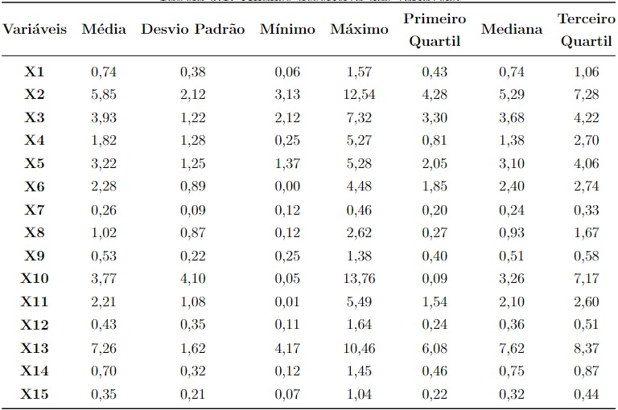
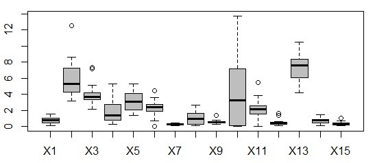
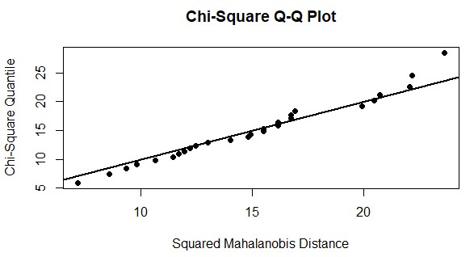
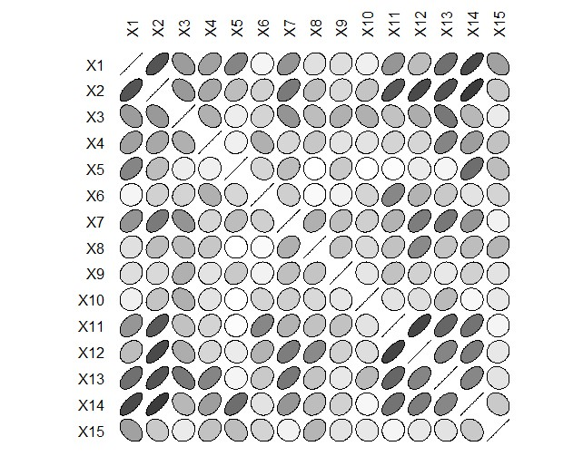
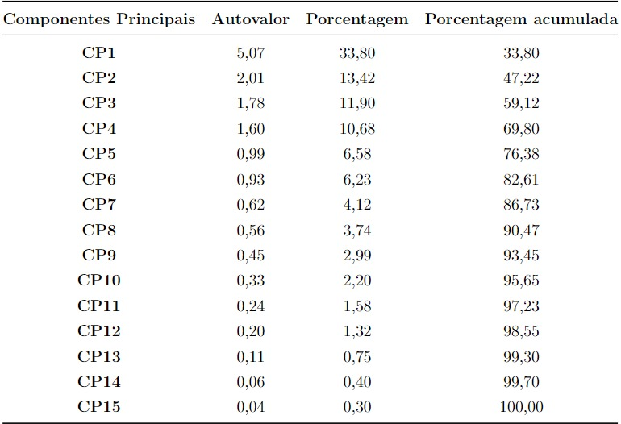
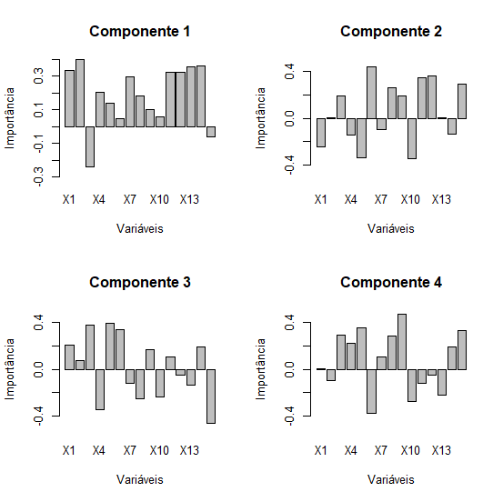
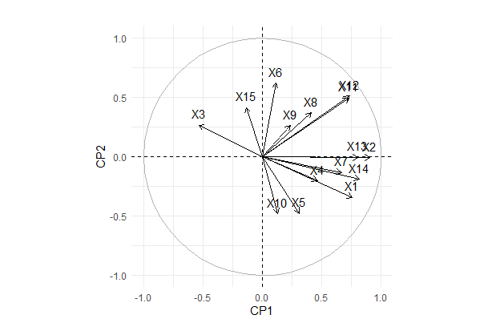
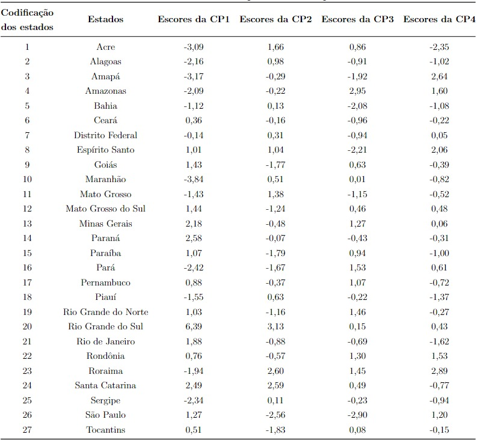
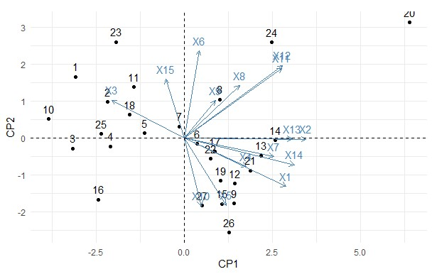

Análises iniciais
Inicialmente realizou-se a análise estatística descritiva das variáveis em estudo. É possível observar que a variável X13 possui a maior média, enquanto a variável X7 possui a menor.

Em seguida, gerou-se o diagrama em caixa ou boxplot para analisar a dispersão e a presença de outliers nas variáveis. Observa-se que a variável X10 possui grande dispersão e as variáveis X7, X9, X12 e X15 possuem pequena variabilidade. As variáveis X2, X3, X6, X9, X11, X12 e X15 possuem outliers.

A análise gráfica do Q-Q plot multivariado sugere que os dados possuem uma distribuição normal multivariada, uma vez que os pontos estão concentrados próximos a reta. Apenas a análise gráfica não é suficiente para confirmar a normalidade, então foi aplicado o Teste Multivariado Mardia, que ao nível de significância de 1%, comprovou que as variáveis seguem distribuição normal multivariada.

As elipses de correlação permitem verificar a força e a direção das associações entre as variáveis. As correlações próximas de 1 e -1 são representadas por elipses mais escuras e as correlações próximas de zero se aproximam do branco. A correlação igual a 1 é representada por um segmento de reta e quanto mais próximo de zero for a correlação mais próximo de um círculo.
A elipse cuja reta que contém o seu eixo maior for crescente indica correlação positiva e a elipse cuja reta que contém o seu eixo maior for decrescente indica correlação negativa. Observa-se que as variáveis X14 e X2 apresentam o maior coeficiente de correlação, já as variáveis X5 e X8 não são correlacionadas. Também não existe correlação entre as variáveis X5 e X10.

Para verificar se as variáveis em estudo estão correlacionadas de alguma forma aplicou-se o teste de esfericidade de Bartlett. Obteve-se χ2 = 218,52 e valor-p = 5,665238x10^−10, logo pode-se concluir que as variáveis não são mutuamente independentes, ao nível de significância de 1\%.
Após verificar que as variáveis são correlacionadas, realizou-se a análise de componentes principais.
Análise de Componentes Principais
Na tabela de Componentes principais (CP), autovalores, porcentagem da variância total explicada pelo componente e a porcentagem acumulada da explicação da variância total, podemor observar que os 4 primeiros componentes
explicam aproximadamente 70% da variação total dos daods.

É importante conhecer quais são as variáveis que mais contribuíram para a variabilidade dos quatro primeiros componentes. A figura abaixo mostra os gráficos de barras contendo a importância das variáveis no primeiro, segundo, terceiro e quarto componente principal.

A variável X2 é a variável de maior importância no componente 1 e as variáveis X6, X10 e X15 possuem menor importância no CP1. No CP2 a X6 é a variável de maior importância, e as variáveis X2 e X13 tem coeficientes próximos de zero, não tendo relevância neste componente.
A componente principal 1 (CP1) representa uma comparação entre a variável mortalidade por câncer de colo de útero (X3) e as demais variáveis X1, X2, X4, X5, X6, X7, X8, X9, X10, X11, X12, X13 e X14, exceto a variável X15 que possui coeficiente muito pequeno. Isso significa que um estado que possui escore negativo para essa componente apresenta taxa maior de câncer de colo de útero em comparação com os outros tipos de câncer.
A CP2 é uma comparação entre as variáveis X1, X4, X5, X10, X14 e as variáveis X3, X6, X8, X9, X11, X12, X15, visto que os coeficientes relacionados as variáveis X2, X7 e X13 são bem próximos de zero.
A CP3 representa uma comparação entre as variáveis X1, X3, X5, X6, X11, X14 e as variáveis X4, X7, X8, X9, X10, X13, X15, visto que os coeficientes relacionados as variáveis X2 e X12 são bem próximos de zero.
A componente principal 4 (CP4) representa uma comparação entre a variável X2, X6, X10, X11, X13 e as variáveis X3, X4, X5, X7, X8, X9, X14, X15, já que o coeficiente relacionado as variáveis X1 e X12 é muito pequeno.
No gráfico de correlação entre as CP1, CP2 e as variáveis é possível observar que a variável X2 é altamente correlacionada com a CP1, sendo a variável de maior importância na componente. Existe uma correlação negativa entre as variáveis X3, X15 e CP1, sendo que a correlação entre X15 e CP1 é baixa. A correlação entre X2, X13 e CP2 é próximo de zero, indicando que essas são as variáveis de menor importância CP2.

Os escores das quatro primeiras componentes principais podem ser visualizados na tabela abaixo.

Observa-se no Biplot abaixo que no Acre, Alagoas, Amapá, Amazonas, Bahia, Distrito Federal, Maranhão, Mato Grosso, Pará, Piauí, Roraima e Sergipe prevalece a mortalidade por câncer de colo de útero em relação a todos os demais.
